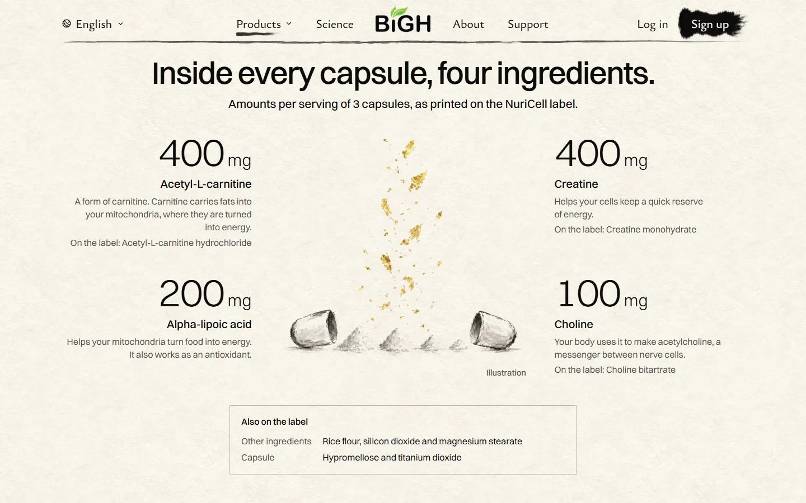
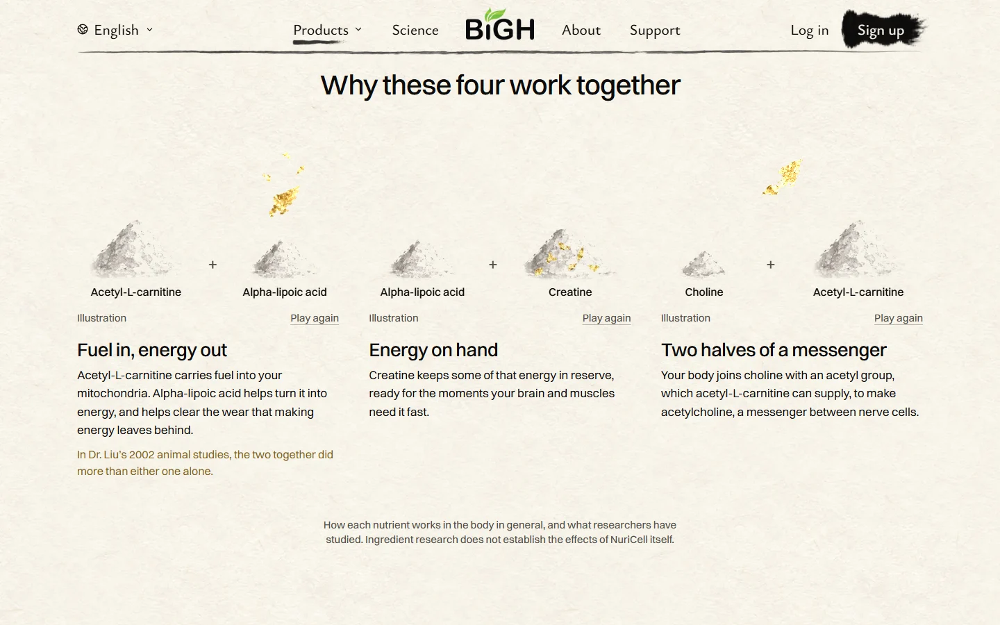
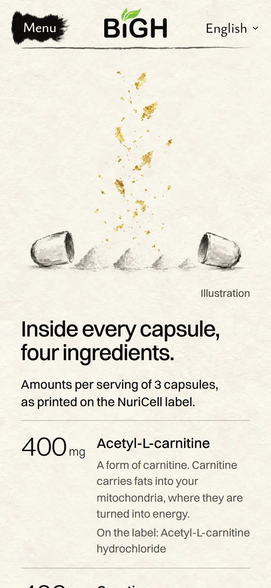
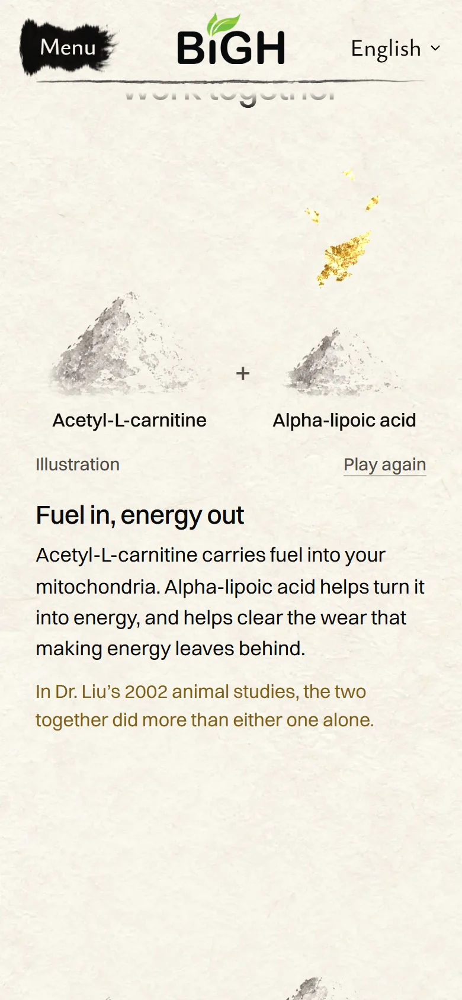

<title>NuriCell Inside Built</title>
<meta name="claude:viewport-fit-sides" content="cover">
<link rel="preconnect" href="https://fonts.googleapis.com">
<link rel="preconnect" href="https://fonts.gstatic.com" crossorigin>
<link rel="stylesheet" href="https://fonts.googleapis.com/css2?family=Ysabeau:wght@400;500&family=Instrument+Sans:wght@400;500;600&display=swap">
<style>
  /* Layout: one column on the site's rice paper; two recordings of the real built page (desktop,
     phone), then stills at full size. One light world, like the site. The recordings (10 MB) are
     not committed: they live in the published artifact (UbeHphVKjW9BqEs2jXh8Fr). */
  :root {
    --paper: #f8f3ea;
    --ink: #0c0b0a;
    --muted: #514e48;
    --line: rgba(28, 27, 25, 0.16);
    --gold-ink: #7d5f1c;
    --title: "Ysabeau", "Iowan Old Style", "Palatino Linotype", Georgia, serif;
    --body: "Instrument Sans", system-ui, -apple-system, "Segoe UI", Roboto, sans-serif;
    color-scheme: light;
  }
  *, *::before, *::after { box-sizing: border-box; }
  body { background: var(--paper) url("art/paper.webp") 0 0 / 800px 800px repeat; color: var(--ink); font: 18px/1.6 var(--body); }
  h1, h2, p, ul, figure { margin: 0; }
  .page {
    max-width: 1100px; margin: 0 auto; display: grid; gap: 56px;
    padding-left: max(16px, env(safe-area-inset-left, 0px));
    padding-right: max(16px, env(safe-area-inset-right, 0px));
    padding-block: 40px 96px;
  }
  .tag { font-size: 0.82rem; letter-spacing: 0.09em; text-transform: uppercase; color: var(--gold-ink); }
  header { display: grid; gap: 12px; max-width: 42rem; }
  h1 { font: 500 clamp(2rem, 5vw, 3rem)/1.08 var(--title); text-wrap: balance; }
  h2 { font: 500 clamp(1.5rem, 3.4vw, 2rem)/1.15 var(--title); }
  header p, .note { color: var(--muted); }
  section { display: grid; gap: 16px; border-top: 1px solid var(--line); padding-top: 28px; }
  video, img { display: block; width: 100%; max-width: 100%; height: auto; border: 1px solid var(--line); background: var(--paper); }
  .phone { max-width: 390px; }
  .pair { display: grid; gap: 24px; }
  @media (min-width: 820px) { .pair { grid-template-columns: minmax(0, 1fr) minmax(0, 1fr); align-items: start; } }
  ul { padding-left: 1.2em; display: grid; gap: 6px; }
  figcaption { font-size: 0.92rem; color: var(--muted); margin-top: 6px; }
</style>

<main class="page">
  <header>
    <p class="tag">NuriCell · What's inside · built</p>
    <h1>Your pick 1A, on the real page</h1>
    <p>Recorded from the built site on this computer. Not live yet: nothing is pushed.</p>
  </header>

  <section>
    <h2>Desktop</h2>
    <video controls muted playsinline loop preload="metadata"><source src="built/nuricell-inside-desktop.mp4" type="video/mp4"><source src="built/nuricell-inside-desktop.webm" type="video/webm"></video>
    <p class="note">The gold lifts out of the powder and settles, then keeps turning. Then the three scenes play one after another.</p>
  </section>

  <section>
    <h2>Phone</h2>
    <video class="phone" controls muted playsinline loop preload="metadata"><source src="built/nuricell-inside-phone.mp4" type="video/mp4"><source src="built/nuricell-inside-phone.webm" type="video/webm"></video>
    <p class="note">Each scene plays as it scrolls into view. "Play again" plays it once more.</p>
  </section>

  <section>
    <h2>Stills, full size</h2>
    <div class="pair">
      <figure><figcaption>Desktop 1440, the gold settled</figcaption></figure>
      <figure><figcaption>Desktop 1440, the three scenes after they play</figcaption></figure>
      <figure class="phone"><figcaption>Phone</figcaption></figure>
      <figure class="phone"><figcaption>Phone, first scene</figcaption></figure>
    </div>
  </section>
</main>
